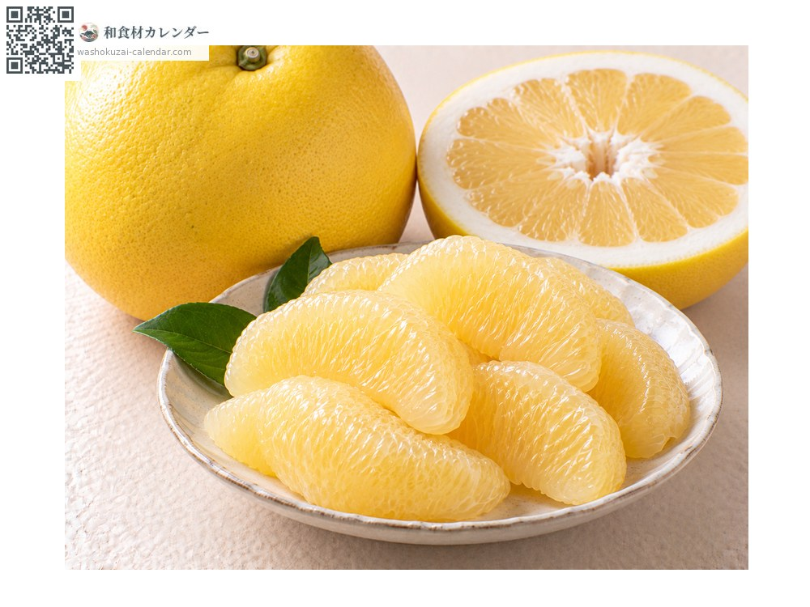
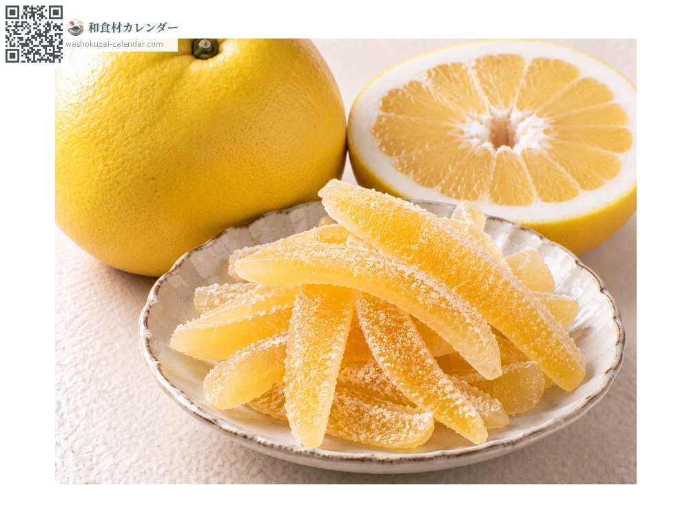
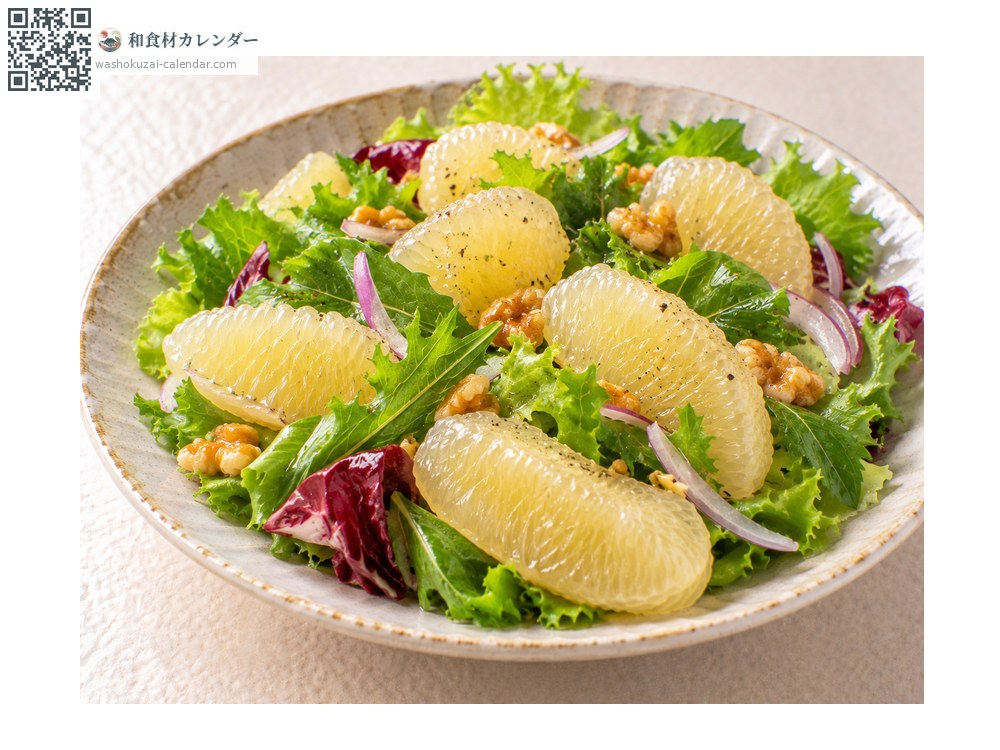
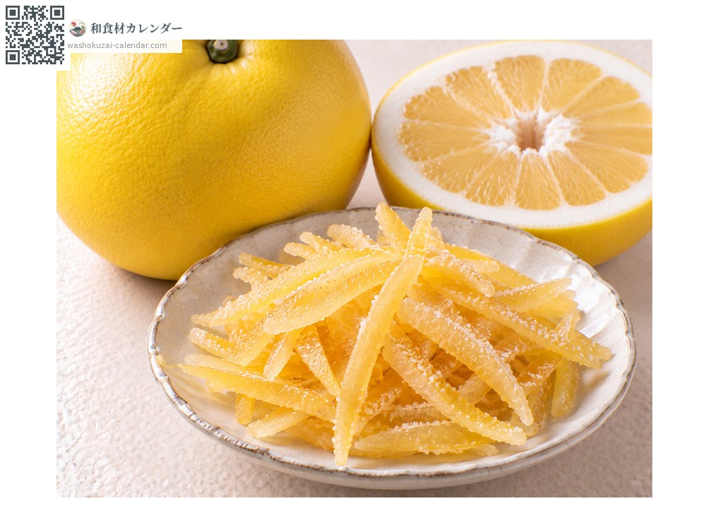

水果
晚白柚
晩白柚 ばんぺいゆ banpeiyu
别名banpeiyu
应季时期为1月、2月、3月、12月

应季时期
1月
2月
3月
4月
5月
6月
7月
8月
9月
10月
11月
12月
应季有供应
烹饪方法

直接生食
剥掉厚厚的外皮后吃果肉，甜味清爽。

柚皮糖渍
把厚皮做成糖渍，是熊本八代的名产。

沙拉
把果肉剥散加进去，口感很有趣。

糖渍果皮
把皮切成细条用砂糖煮。
挑选方法
拿起来沉甸甸的、表皮有光泽。香气强烈。
保存方法
常温可放一个月左右。也可以先摆着闻香气，之后再吃。
主要产地
小知识
直径二十五公分、重达两公斤，是世界最大级的柑橘之一。熊本县八代市是主要产地，果皮厚度可达二到三公分。把这层厚皮做成糖渍的「柚皮糖」是当地名产，因此果肉与果皮都能派上用场。